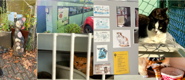
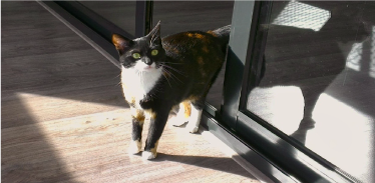

Background story
Henriette van Weelde, an Amsterdam lady, founded the Catboat, or Poezenboot, in 1966 after saving a stray cat and quickly expanded to take in others. With little room in her home, she created an unusual solution: a houseboat on an Amsterdam canal, known as the Catboat. This one-of-a-kind cat sanctuary has long been a darling among cat lovers, providing a safe refuge for stray cats in need of new homes. Today, the Catboat is not just a sanctuary, but also a popular tourist destination and a symbol of Amsterdam's animal-loving culture.
My own story

Almost 13 years ago my mom got my brothers and I a cat. From that day on
taking care of her was my biggest responsibility. It only took me a
second and I was already head over heels for her. As she grew and started
to explore she developed a big (and when i say big it is BIG )personality.
She loved looking out of the windows and tried cathing the birds even
tho she was inside. Later one we noticed that she couldnt really get
well adjusted to other people outside of the direct family and that she disliked kids. So after a
year that we had her, we thought it was for the best to put her up for adoption so that
she could really enjoy life. So in 2012 whe brought her to the
Poezenboot and not long after that she was already adopted in a loving
family.